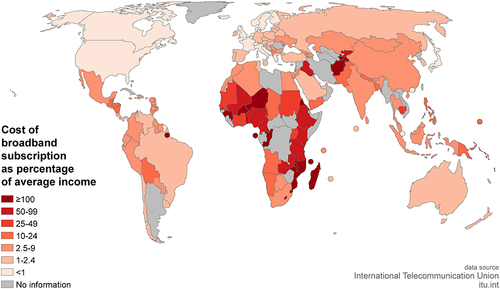
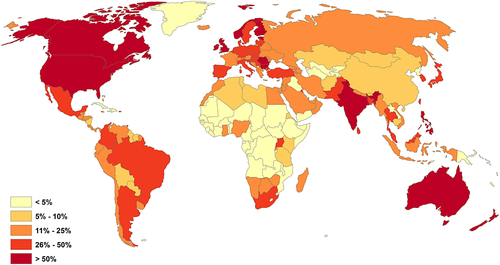

Summary points during the readings
- Information is always moving in a sense
- Certain modes of transport can not allow information to change eg printing press
- Controlling the flow of information can be dangerous - eg governments and censorship
- Nowadays a restaurant excluded from a map may not be a restaurant if nobody finds it
- Pre-digital age, information for all intended purposes was geographically bound
- Collecting knowledge required large, powerful organizations...power control
- These organizations became guilds and universities which meant formal training emerged thus the access to modifying information became constrained too.
- The technology of the time would have also limited the movement of the information
- In the digital age, the barrier to entry for information, collecting, understanding and processing has been drastically lowered. Due to things like a modern computer. No longer is information location and proximity bound.
- First time ever that there is an equalization of access to information and that everyone can contribute to the construction of knowledge
- 3B people with access to the internet. The world population is just over 7B. So just under half the world has access to this growing reservoir of information
Reflection on reading
The article brings up an interesting point, that information has geography tied to it. This can more clearly be seen in the pre-digital aid where things like books were bound to libraries which occupied geographical locations and thus the knowledge was proximity bound. As in only people who were close enough to use the library could access the information in those books. This meant that information was separate and in enclosed volumes. This meant the barrier to entry of gaining this knowledge was high, as not only did a person need to be in the same geographical area as the knowledge but also possess the literacy and education required to use it. Thus for most of history, the average person has been excluded from being able to access the vast quantities of knowledge humanity had to offer.
This also made knowledge extremely vulnerable. This is clearly illustrated by the burning of the great library of Alexandria in 48bc by Julius Cesar[1]. In this library, inventions such as the Archimedes screw[2] were conceptualized. These inventions were only able to be achieved as the large collection of information in the library gave scholars access to the knowledge needed. The burning of the library of alexandria is seen by historians as one of the greatest human sets backs. The amount of knowledge lost in this incident was enormous. It would take humanity centuries to regain the lost knowledge.
Another interesting fact brought forth was that of the danger that can occur when people control the flow of information. This can be further explored through the catholic church and their exploitation of the non-educated during the dark ages[3]. During this period the average human could not read. Thus they couldn’t read what was actually in the bible. This lead to rampant corruption in the churches where priest would exploit followers for money as a way to repent for their sins. Since the followers had no way to verify the teachings of the priest, they accepted these terms and thus the catholic church was able to generate mass amounts of wealth from the exploitation of their followers.
Coming back to the digital age. Since the creation of the internet, the barrier to access for knowledge has dramatically decreased. No longer is information geographically bound in the traditional sense. Articles and e-books can be accessed and stored all around the world. But with this new digital age the article points out new barriers to access are prevalent. Broadband access has now become the new barrier to access. As pointed out by certain figure from the article.
Figure 1
Some places in the world have extremely expensive access to the internet. As illustrated by figure 1. Access to the internet in certain countries can cost more than the entire monthly salary of people living in those countries. This show’s that information can still be geographically tied to a place. Although it may not be the traditional sense of distance as seen in the pre-digital era. Information geography can be seen now as to represent the social-economic status of a geographical area and how they could affect an individuals access to the internet and knowledge as a whole.
The article also touches on the issue of language. Since a lot of the mainstream internet is run by western countries such as North America and Europe. The majority of these sites are in English. This could provide an additional barrier to entry for users from countries where English is not the main spoken language. This is best out outlined by figure 2 used in the article. This shows that the majority of Wikipedia English edits come from countries that are English speaking. Since Wikipedia is the biggest online encyclopedia, this can show a clear geographical bias to countries where English is the prime language of communication.
Figure 2
In conclusion. Information and geography can be seen to have a link between them, where it was a more close direct link such as a book and a library in the predigital age or more abstract connection such as geographical locations socioeconomic status affecting individuals ability to connect to the internet or peoples home language. A persons geography has a lot to do with how they can/will consume information and this geo-bias can affect an individuals ability to contribute to the furthering of human knowledge yet this should not be the end. Additional assessability methods should be developed and employed in order to encourage online participation and engagement from areas of traditional low online presence and engagement. As the more people that are connected and can contribute to the collection of knowledge, the more knowledge and understanding the human race as a whole can collect and understand. Which provides a net positive for all humans around the globe.
Referencing
[1]En.wikipedia.org. 2020. Library Of Alexandria. [online] Available at:
[2] En.wikipedia.org. 2020. Archimedes' Screw. [online] Available at:
[3]Mark, J. and Mark, J., 2020. The Medieval Church. [online] Ancient History Encyclopedia. Available at: